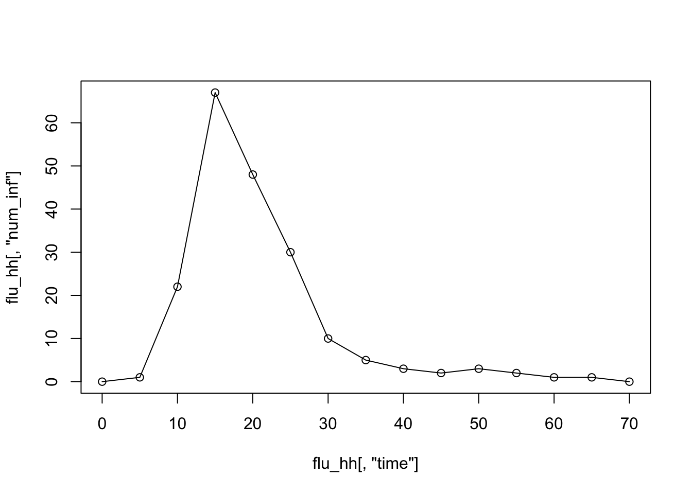
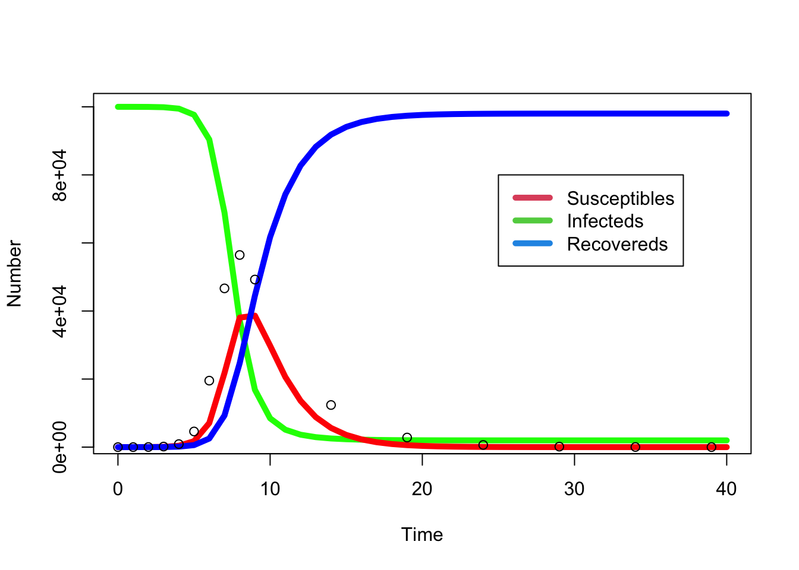
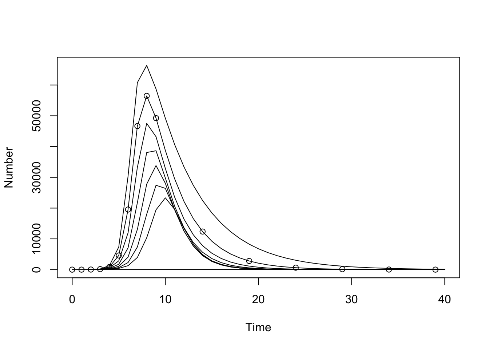

[1] "/Users/lshja16/Documents/Git_repositories/_Work/GWAC/mppr"Basics of R for Infectious Disease Modelling
Objectives
The aim of this session is to introduce you to the basics of coding within R.
To do this, we will introduce you to the basic syntax, via the use of some simple commands such as how to read in data and plot. We will end with the introduction to methods for ODE solving in R.
In this session, you will
- familiarise yourself with the basic syntax of R
- learn how to create basic plots in R
- simulate an SIR model in R
- adapt an SIR model to include births and deaths, producing cycles
The best thing to do is to read each section and type (or copy and paste) the R commands (in grey boxes) into your own R session to check that you understand the code. All the data need is in the /data/ directory.
You can either work in a single R window, or use the user friendly interface RStudio, which allows you to have your saved R code, separate to your executed commands. It also holds the plot, environment and history window. Using RStudio you can keep your model code (in a file called ‘file.R’, where you can replace ‘file’ with any name you like) separate to your executed code in the Console window. In this ‘file.R’ you can store the useful and checked code for future use. For example, you could start a new R file and store in it all the commands below.
Basic syntax
Commenting code
Within R code, anything behind a # is “commented” out and won’t be executed. It is good coding practice to comment your code as you go through.
# This is commented code. You can use this in your R file to comment what the code is doing in your own words.
Working directory
The first step when creating a new R file is to specify a working directory. This is the folder on your computer in which you are working. It is likely to be the folder in which the R code is saved (but it doesn’t have to be). Each computer will have a different specified address for the working directory. Upon opening R, you can find out “where you are” using
You need to tell the R session where you want it to work. To do this you use the command to “set the working directory” or setwd().
In general, setting the working directory is problematic as it is tied to only your computer and anyone else using your code may not be able to access the paths you specified.
For a more reproducible approach, two approaches are strongly recommended: you can use an Rproj file, or harness the power of the simple here R package. According to the README of the here package, “[it] creates paths relative to the top-level directory. The package displays the top-level of the current project on load or any time you call here()”.
Let’s see how here() works
What happened? Can you compare your result with the next person to you?
Another example, let’s specify the path to the data
[1] "/Users/lshja16/Documents/Git_repositories/_Work/GWAC/mppr/data"And the path to the data/data.csv file.
[1] "/Users/lshja16/Documents/Git_repositories/_Work/GWAC/mppr/data/data.csv"The result you see here will adapt to the computer on which you’re working.
Moving forward, we will construct paths using the here() function, so make sure you understand it. Check especially the section on reading in data below.
Mathematical elements in R
The following symbols represent
- multiplication:
* - addition:
+ - subtraction:
- - assignment of a name to an object:
->
To check if something is equal use ==, or not equal using !=.
Below are examples of the main mathematical structures that we will use in R. Copy the below text into your R session and change the numbers so that you can follow what each command is doing.
The basic element is the vector:
You can also construct and manipulate matrices:
Can you generate a matrix of size 10 x 5, filled with 2s except for the first column that has the sequence 1 to 10?
Simple commands such as ‘sum’ are already encoded in R.
Other types of allocations include:
Help files
To find help in R you can use several different commands. For example, if you wanted to know more about the “sum” command you would type:
The first two are equivalent, whilst the last will do a full text search of all R’s help files. This is most useful when you aren’t sure of what the exact function is called in R. In RStudio, there is also the option to search the help tab in the bottom right window. Google is also very useful for finding commands.
Can you use ?? to find out how you would generate binomial random numbers in R?
Packages and libraries
As R is open source, it is being developed and added to all the time. It is likely that you may need commands that are not in the standard R programme that you have installed.
To get access to these other functions, you need to install ‘packages’. These contain ‘libraries’ of functions, already coded into R, that can perform new or different functions.
There are two ways to do this: 1) In RStudio, go to the “Packages” tab and search for the required package and load it. 2) Type
replacing “packagename” with the name of the package you would like to install. For example, can you install the package deSolve? We will use this to solve ordinary differential equations later on in this practical.
Once installed you then have to load the package at the start of the R file. This is done using
Reading in data
In order to read in data, the first thing to do is to check that you are pointing R at the right folder by setting the appropriate working directory. To do this make sure you setwd(where_the_data_is), to point R to wherever you have decided to store your files.
There are many ways to read in data. Here, as we have ‘.csv’ files we could either use read.table()
or read.csv()
Here both mydata and flu_hh are the same data. Can you check this in R?
The data is read in in the form of a data.frame. This is a type of data format in R that allows the inclusion of both numbers and strings (letters). There is more information on reading in data here.
There are several useful tools to look at the data we have read in. Copy the below code into your R session and check that you understand all the commands.
How would you go about finding the maximum time in this data? At what time is the number of cases at its maximum? See if you can write code to do this yourself. To do this you may need to use the function which that searches for the location of matching values. The solution to this task is below.
To add another column to a data.frame you simply refer to the name of this new column and assign it to have certain values. For example, to add in a column of percentages:
Basic plotting
R has inbuilt useful functions for creating plots. Again, copy and paste the below and check the differences in the output. The command plot creates a new plot window which can then be added to using lines or points. By default plot will create a plot with points, to alter this use the type="l" command as shown below.




You can also alter the size of the axis to focus on certain areas. For example, use the max_prop from above to focus on the increase in the outbreak only.

In order to save plots, again you need to check you are in the correct working directory. Then open a file and insert the plot like this:
You can also plot multiple plots together. For example, using the par command, you can divide the window and then place the plots within it.
In order to output data, there is a write equivalent to read (again make sure you are in the appropriate working directory):
A quick note here on “not a numbers”. In R these are NA or NaN. This is usually an error or the result of a silly division.
Conditionals
Conditionals are built in functions that allow you to compare and contrast elements in R. For example, the which function gives you the index of values that match some condition:
if statements allow you to compare elements
or check that data had been read in ok:
or check that what you are calling a proportion sums to 1:
if statements can be combined (as in Excel) with else statements. These can be simple:
or more complex:
Some useful commands in R to help with checking code such as the if/else statement above are:
INDENT: “Command + I” on OS X, “Ctrl + I” on Windows. Highlight all code and hit enter. Helps find mistakes and lays out code nicely
COMMENT: “Command + C” on OS X, “Ctrl + Shift + C”. As above but makes all code selected commented. Useful if you want to comment out a load of code and run without it temporarily.
For loops
For those of you who have coded before, you will know the importance of for loops. For those who are new to coding, these structures are very useful in allowing you to repeat a set of commands multiple times to different elements.
For example, you can use for loops to generate the two times table
Or to fill a vector with the first 50 Fibonacci numbers:

In the above example, we built an empty vector to fill within the for loop. However, we may not know the end size of the resulting vector and so in this case can instead concatenate:
Writing your own functions
Functions are useful ways of packaging up pieces of code. If you are going to do a set of commands multiple times then it can be simpler and cleaner to place them in a function that has been thoroughly checked and that you have not altered subsequently.
To build a function you use the syntax
Within the ‘code’ section you need to include the main coding information, which uses the inputs and also ‘returns’ an output.
For example, to build your own function for calculating the mean do:
To run the function you need the function name and the correct inputs:
You can store all the functions that you have in one big .R file and load them into your current R file using the command source.
Can you understand what the following function does?
Does this give you the output you expected? You will need to use some of the commands for looking at data that were introduced above. The file ward_data.csv can be found in the /data/ directory.
Writing and solving ordinary differential equations
In order to write and solve ODEs, you need to learng the basic ode syntax in R and load the package that we installed earlier (deSolve). Remember that to do this you need to type:
The package deSolve includes a function ode that solves ODE equations. This function needs certain inputs. Have a look at
and see if you can understand what the required inputs are.
For this part of the practical, we will build and solve our own SIR model. We will compare it to data and try to determine the correct parameters.
Firstly we need to read in the data, which is stored in data/data_sir.csv.
Can you make a simple plot to check what this SIR outbreak looks like?
As described in the help pages for ode, this function itself requires several inputs including another function.
The first input it requires are the initial conditions. We have to specify the initial conditions for all of the states. Here we have three states, S, I and R:
Can you alter this initial vector for a population of 100,000 to have initially one infected and the rest susceptible?
The second required input are the times over which the output for the ODE is wanted. Note this is not the same as the timesteps over which the ODE will be solved. These are specified by the method. Here lets assume lets say we want output every year for 40 years.
The third required input is the function itself, which governs the dynamics between the states. Here as we have an SIR model we can translate the differential equations into three simple relationships:
Finally, the ode function requires the input parameters, which here are only beta and gamma:
In order to run the function we input all of the above and save the output in a vector called out:
What does the output data look like? Does it make sense? Can you build a simple plot to look at the change in the number Infected over time?
To look at all of the model output we can plot everything on the same graph:

Does this match the data you read before in using read.csv well? Note, that the data given is the proportions infected over time. So in order to compare you either need to convert the data to numbers or the numbers to data. Try and do this, and plot the data and model output on the same graph. A solution is given below if you get stuck.
What we are doing here is assessing our model’s “fit” to the data. This is a key stage in the development of any model - does it refect reality? The simplest way to do this is by plotting model output and data together and comparing them by eye. Over the next few days, we will introduce several more formal and quantitative methods for assessing a model “fit”.

Assume you know that the value for beta is 2/100000. Can you write a function that considers a range of different parameters for gamma, runs the model with these various values and then plots the outcomes with the data? From this what is the best estimate you can get for gamma?
Note that this was output generated with a set value for gamma and so you can find a solution - however in the real world epidemic there is unlikely to be such a perfect fit!
The solution to the code is below, but try not to look at this before having a go yourself. This will use all the skills you’ve learnt in R above and will prepare you for the rest of the course.

You can store your data for the SIR solution at different gamma values using (as above):
Going further
The SIR model with births and deaths
In the lecture yesterday, you saw the infection cycles that occur when you use an SIR model with births and deaths. If you have gotten this far, try to build and solve using ode, your own version of this SIR model with births and deaths.
Remember that the set of ordinary differential equations for this is: \[\frac{dS}{dt} = - \beta \frac{I}{N} S + \nu N - \mu S \\ \frac{dI}{dt} = \beta \frac{I}{N} S -\gamma I - \mu I \\ \frac{dR}{dt} = \gamma I - \mu R \].
Initial parameters from the lecture were: \[ \beta = 500, \gamma = 50, \nu = 0.02 \].
Remember that the population size should stay constant, at say 1,000.
Extending the SIR model
If you have time, you can now try to build more complex versions of the SIR model to match the infectious disease you are interested in. For example, you could try and include multiple strains of influenza or extend the model to include some of the complexity of TB. The first stage would be to sketch the model structure on paper. Remember that simplicity is the key and that you will need data to inform any parameter values. Secondly, translate the model structure into differential equations. Thirdly, translate the differential equations into a new function to use in the ode solver function.